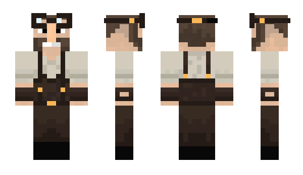

Alexander Harkness
Alexander is a first-year student at Imperial College London, studying Computing. He previously studied at Alleyn's Senior School, obtaining A-levels in Maths, Further Maths, Chemistry and Physics. Alexander has lived in South London since he was born, although he has been forced to venture into the far northern reaches of South Kensington and Notting Hill to study Computing. His love for programming and computers first developed at secondary school where he worked first with Scratch and Raspberry Pies at lunchtime clubs, and then with more advanced technologies like C++ and Go at home.
He is interested in Free/Open Source software development, having worked on many projects, most importantly Cuberite, a FOSS Minecraft-compatible game server written in C++, and with extensibility through a substantial plugin API. In his spare time, he enjoys Kayaking and watching YouTube videos on a wide variety of topics.
Momo Langenstein [they/them]
... is a first-year computing student at Imperial College London, who does not enjoy talking about themself in the third person. I grew up in a household, in which the most exciting program on the computer was PowerPoint. Having a lot of free time, I experimented a lot with it and soon began to develop small point-and-click like games. Through exposure to "The Settlers 6" at a friend's house, I started to realise that my humble methods probably weren't the way video games were made, especially as I just couldn't figure out how to render 3d scenes in PowerPoint.
My journey started with Scratch and getting a couple of images having a scripted dialogue, from which I moved on after having tried to train a program to recognise my drawings of spells gestures for "Incendio" and "Petrificus Totalus". In Blender, I had my first contact with an actual programming language, Python, and started to grasp the vast opportunities of list indexing without storing digits in a large number and retrieving them with integer division. From there, I developed my first real game, Fail, which gave me a great opportunity to create a mess of code, as ideas grew exponentially with the little knowledge I had. Nevertheless, I managed to include a server, which was first hosted by Google Docs until I came back one year later and rewrote the entire code base. After that, I worked on the endless climber The Beanstalk in using Unreal Engine 4, which I am still proud of today.
As I had now entered the last two years at school, I sought to combine my time demanding hobby with educational duties and developed a Mathematical puzzle game called Rainbow Puzzle for iOS during a one-year long project. During this time I became increasingly interested in voxel rendering and simulations. At the beginning of 2017 I started out on my quest to learn something about rendering and game engines — and I have filled my few hours of free time with the project since then. Writing code for a highly parallelised architecture like my GPU has made me reflect about low-level optimisation, memory consumption and energy efficiency of my code and created the interest that led me to look deeper into the subject in this project.
Iurii Maksymets
With Oblomov, lying in bed was neither a necessity (as in the case of an invalid or of a man who stands badly in need of sleep) nor an accident (as in the case of a man who is feeling worn out) nor a gratification (as in the case of a man who is purely lazy). Rather, it represented his normal condition.
Usually, people strive and work hard to do some job. And I purposefully work even harder to avoid doing it. Because of that, a hundred years ago I would be an absolutely useless member of society. But, fortunately, these days we have a degree called "Computer Science".
I speak Russian, Ukrainian, English, C# (for small Unity games) and Java (for school and college projects). Apart from coding, I play the guitar, listen to good music, read great books and sometimes write JavaScript. By "Good music" I mean Rammstein, Metallica, System of a Down and other similar bands who play medium or (mostly) incredibly simple songs; and my "Great books" are so "Great" that I believe I should avoid mentioning them here.
Tiger Wang
Tiger is a "-1th-year" Business Management student at the Imperial Business School. He enjoys C++, all sorts of things related to computing, and a charming view of the sunset. For the first two reasons, he seems to have convinced everybody that he is, in fact, a student of Computing. :3
Much like Alexander, he is also involved in the Cuberite project, the redstone simulator being one of his pet projects. In fact, we went to the same secondary school, and can attest that those lunchtime clubs were very interesting, to perhaps the detriment of the stability of the school’s network, and other computing resources.
And quite to the contrary, Tiger is an avid fanboi of Microsoft technologies, and views open-source alternatives as objectively inferior. To that end, he maintains a low profile in the Computing department, as such heinous views are grounds for summary egging.
He enjoys swimming (and occasionally water polo), speaking in the third person, the clarinet, retro computing, a n i m e, games such as Portal and Team Fortress II, and a whole host of other things which are entirely irrelevant to Green Computing. But perhaps, most importantly,
i like trains